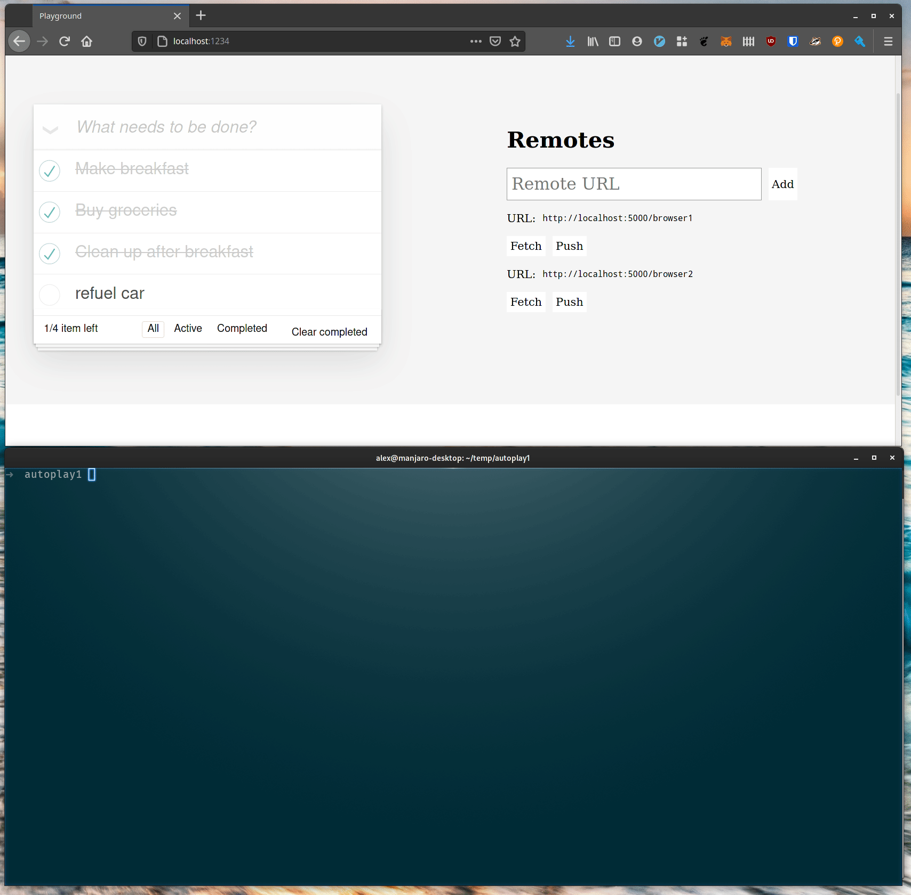
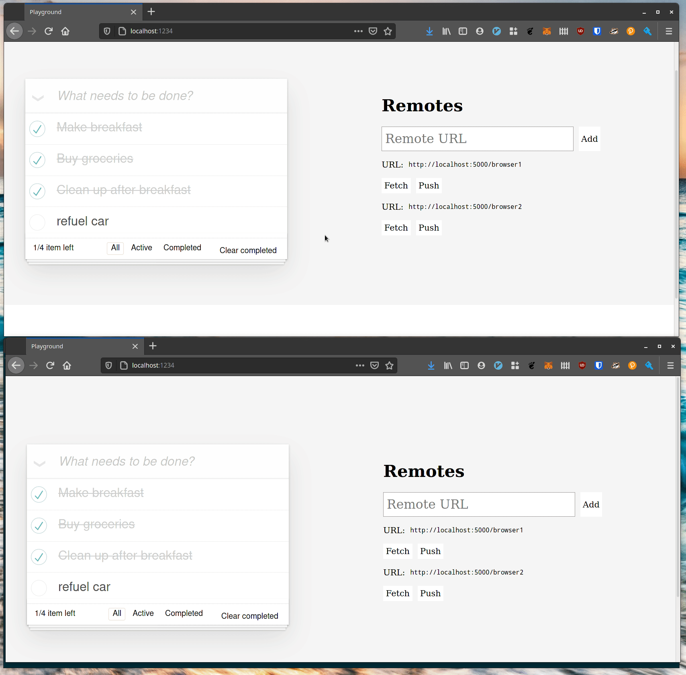

A TodoMVC interop demo, Document Compression
Automerge 1.0 Demo
One promise of local-first applications is easier interoperability of tools on shared data. Today, it is common for client applications to fetch data from an authoritative source hosted as a REST API. This is convenient, but this centralized approach only works when the REST API is available. We will demonstrate an alternative approach similar to how git works, with many independent locally stored copies of the data combined using Automerge. Each user has the full history for their documents and can merge changes from any other user.
Although many past Ink & Switch prototypes have used peer-to-peer networking for data distribution in this demo we’re trying something different here. In this prototype, we show an alternate file-based approach inspired by the upcoming Automerge 1.0 binary file format. Automerge 1.0 is built around a compact binary representation of a full document’s history, well-suited to distributing as a file. An application could distribute these files in almost any way, such as via DropBox or Google Drive, but we have included a trivial Python file-server in the project repository.
This prototype can be found at https://github.com/inkandswitch/automerge-todomvc-http, including instructions on how to get it up and running.
Multiplayer TodoMVC in React
Our prototype looks like any old TodoMVC example app, except there’s this sidebar with a list of “remotes”. What’s going on with that? If you input a URL in the text box at the top of the sidebar and hit return then the URL will be available to push and pull content from. Here’s an example showing two windows sharing data:
An important point here is that in this example the two browser windows never push to the same file. Each browser window represents a different user who publishes their own files and invites other users to pull their changes in if they want them.
Command line
This is all well and good, but what if you want to automate something here. Maybe you want to run a script which automatically removes tasks if they’ve been marked as complete or something. Well that sounds like a task for a shell script, and to do that we’ll need a command line client. Happily one of the fruits of implementing Automerge in Rust is a native command line client:

automerge is a CLI for automerge data. Here we see the export commmand which takes automerge data from a file or standard input and outputs the JSON version of it. One of the neat properties of the automerge format is that the concatenation of two automerge files is an automerge file:

Well this is great for reading, but we can make changes as well.
(Note that the syntax for the change command is a first prototype, not a designed solution.)
Native GUI Applications
Command lines are all very well, but one of the reasons to build a Rust library for automerge is so that we can build fast, native applications which integrate with the OS well. Here’s the same data loaded in a lightweight GTK application (no Electrons here):
Full Document Compression, Feature Complete!
As we described above, the new Automerge 1.0 release is built around a new compact data representation. The previous version of Automerge didn’t describe a data format, and so most folks stored Automerge changes as large JSON blobs. A single character inserted into an Automerge Text field and stored as a plain-text JSON object could be as large as 300 bytes.
Automerge 1.0 is designed around an RLE (run length encoded) compressed format that reduces repeated metadata without loss of history fidelity or custom formats for particular data formats. (More details on this in the future.) The result is that for real-world edits a large collaborative document can have as little as about 1.2 bytes of overhead per character, or about a 200x improvement.
This has been implemented in the Javascript implementation for a while, but full document compression just landed on the Rust side too, so now automerge-wasm is now at full feature parity with the javascript implementation!
The next project for automerge-wasm is going to be official npm packaging, which should allow users to switch between automerge and automerge-wasm as easily as renaming the package. Beyond that, we intend to continue our work on the performance and benchmarking front.
That’s all for this update. A full release of Automerge 1.0 is getting closer, and we’re eager to help Martin get it over the finish line. See you in a couple of weeks!